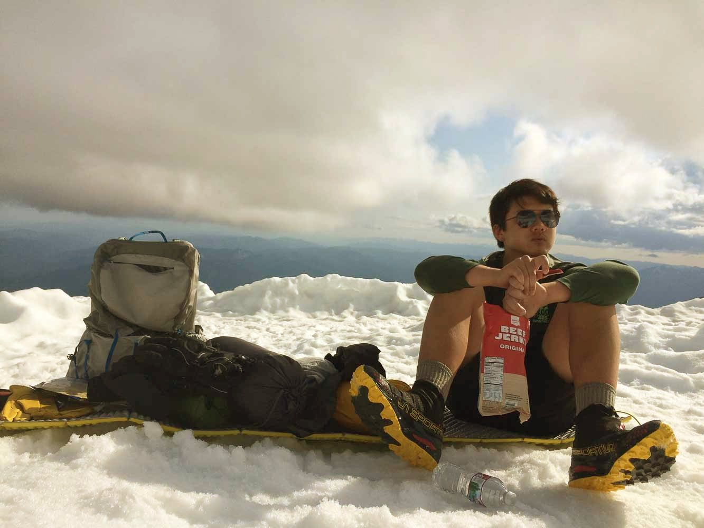

Mt. Shasta - June 2018
Originally it was going to be just Richard and I (some other people too, who couldn't go), but Richard's dad joined in a few weeks before. That way we could get there by car and not have to take the train! We took the standard Avalanche Gulch route, starting at Bunny flat and going through the Red Banks.


Casaval Ridge

We got to Lake Helen in the afternoon, and there was a lot of time to hang out. We climbed on a weekday, so there were very few people compared to the weekends. We met a 19 year old girl climbing with her friend, both also from the Bay Area. She sat with us for a while before going to sleep. (Early morning the next day!)

Looking up to the Red Banks



The next morning, we woke up about 2 hours late (mistake!), which potentially compromised our summit chances. (We had a turn-around time of 1 pm). Climbing up to Red Banks was pretty miserable, and it was very cold. My shoes were too flexible to use the crampons properly, so frontpointing wasn't possible. Had to kind of walk up like a duck :/

The bergschrund of Konwakiton glacier

Thumb Rock (thumb seen from a different angle)
Right at the base of Misery Hill (13,700 ft about), we knew weren't going to make it to the summit by the turn-around time, so stopped and turned back. It was a bit disappointing, but it had already been very amazing!


Everything above 11,000 feet clouding up just as we come down.
Apparently the Burger King Texas Double Double has jalapenos, which did not mix well with my burned lips.